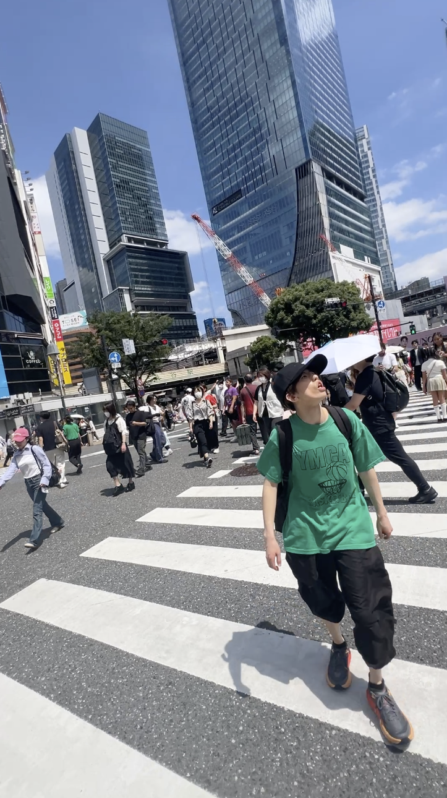
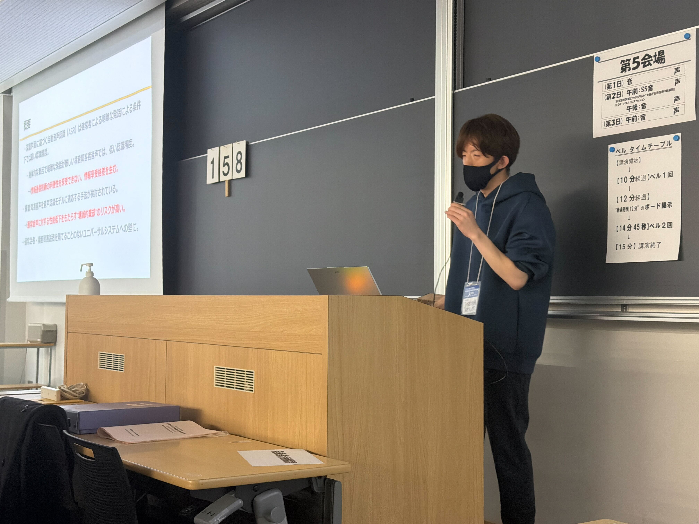
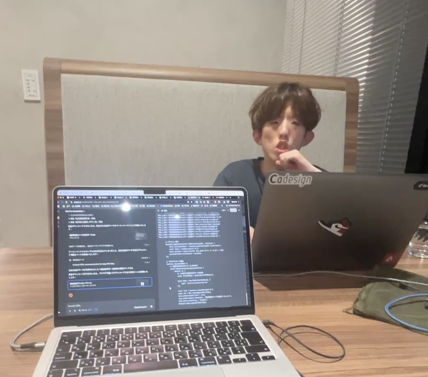
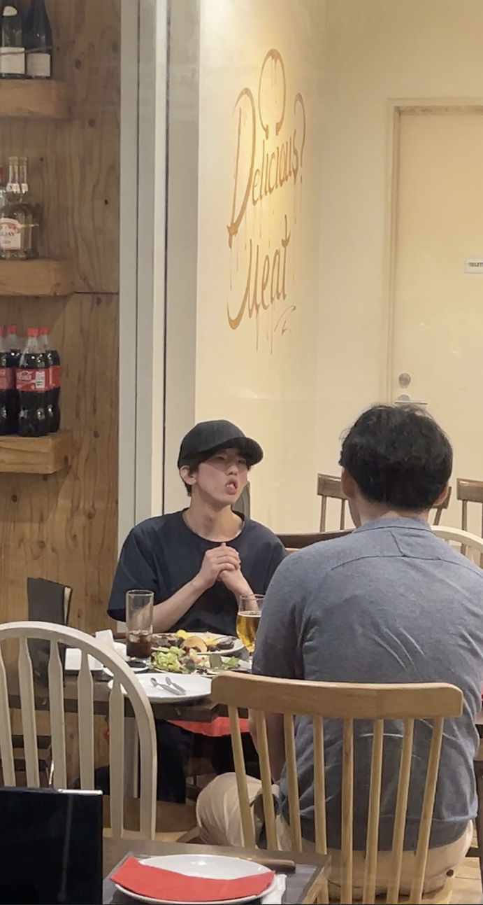

Story
小笠原朝陽の挑戦 ── 15時間の執念
ASSAプロジェクトの原点には、一人の当事者研究者の存在があります。
構音障害と向き合った日々
小笠原朝陽は生まれつき顔周りの筋肉が弱く、発音が不明瞭になる構音障害を持っていました。「自分の声は、誰にも届かない」── そんな孤独のなかで、彼はテクノロジーに希望を見出します。
認識率わずか7%という現実
しかし、最新の音声AIに自分の声を入力した結果は、認識率わずか7%。10回話しかけても、1回も正しく伝わらない。健常者の声だけで作られたAIは、彼の声を「ノイズ」として処理していました。
「ないなら、自分がデータになる」
「データが足りないなら、自分が作ればいい」── 小笠原は半年間、ほぼ毎日マイクに向かい続けました。喉を枯らしながら記録した音声データは15時間、約12,000文。類を見ない規模の単一話者構音障害コーパスが誕生しました。
認識率80%への飛躍
この膨大なデータをAIに学習させた結果、わずか7%だった認識率は80%を超えるまでに飛躍。その成果は音声信号処理の世界最高峰の国際会議 ICASSP 2026 に採択されました。




2026年3月17日、小笠原朝陽は日本音響学会での学会発表を終えたその日の夜、宿泊先のホテルで亡くなりました。この研究の完成を見届けることなく、志半ばでの旅立ちでした。
しかし、彼が15時間の録音に込めた執念と「どんな声も置き去りにしない社会を創りたい」という願いは消えることはありません。彼のニックネームである「あっさ」の名を冠したこのプロジェクトが、その遺志を受け継いでいます。
小笠原 朝陽
おがさわら あさひ（2001 - 2026）
生まれつき構音障害を持つ当事者研究者。
2020年、岩手大学理工学部 知能情報コースに入学。
2024年、同大学院に進学。談宜育准教授のもとで音声認識の研究に取り組む。
専門外であるハードウェアの研究室から、独力で音声AIの専門家と繋がり、構音障害音声コーパス SS-JDSC を構築。半年間にわたり15時間・約12,000文を録音し、音声認識率を7%から80%超へと改善させた。
その成果は世界最高峰の国際会議 ICASSP 2026 に採択。神戸大学博士課程への進学も決まっていた。